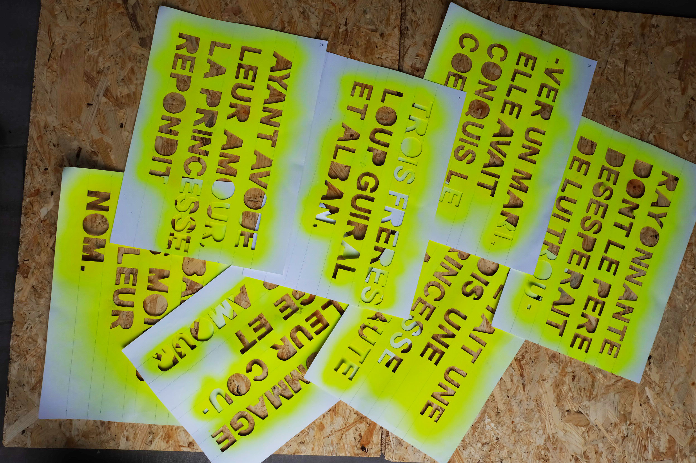
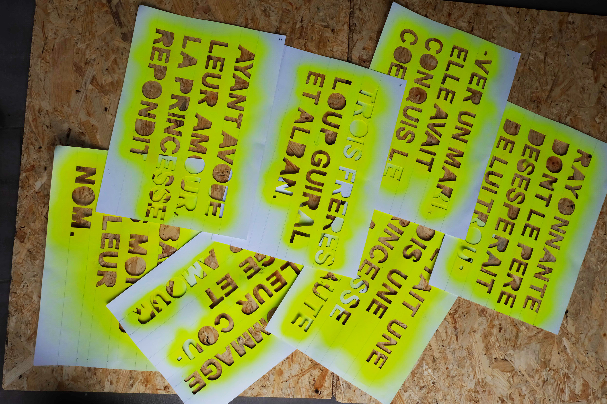

traces légendaires
La Borie est un mas dans le sud de la France, qui a communément donné son nom au chemin qui le traverse. Ce chemin dessert plusieurs petits hameaux, et assez peu de gens la fréquentent quotidiennement (riverains, agriculteurs). Cependant, ce chemin est devenu une piste de course et de promenade assez fréquentée le week end. La particularité de ce chemin, c’est qu’il dispose d’une vue imprenable sur le Pic St Loup, relief identitaire de la région. Je me suis promenée sur ce chemin que je connais bien, et me suis alors demandé de quelle manière je pourrais mettre en valeur ce chemin, lui apporter un attrait. Il existe une légende assez connue qui raconte les origines du nom de ce Pic. J’ai donc pensé à inscrire progressivement sur le chemin cette légende, les promeneurs pouvant contempler le Pic tout en lisant l’histoire. Il s’agit en outre de sortir la légende des livres pour l’inscrire directement dans son contexte, sur son territoire.


 
